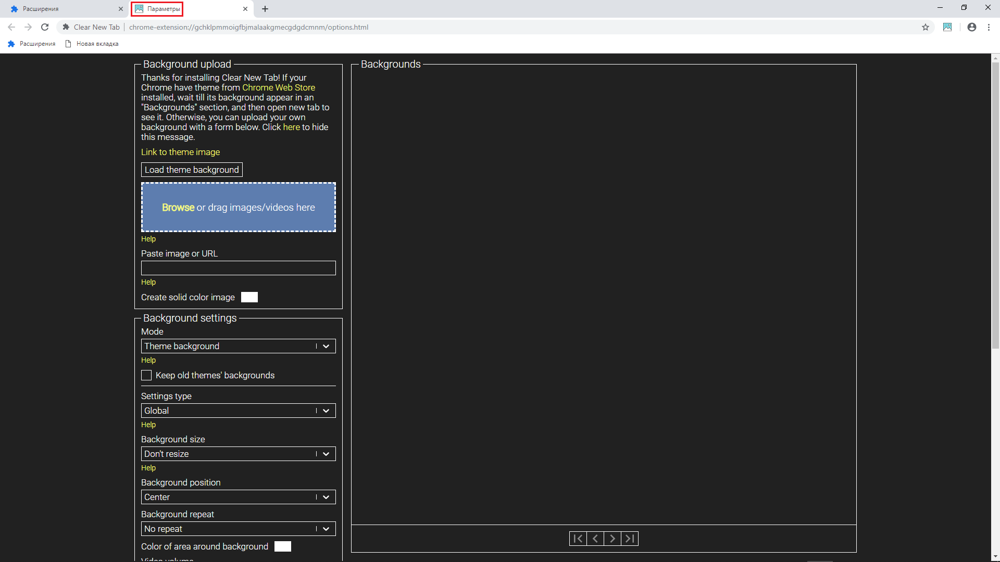

Currently, Clear New Tab's messages.json is translated into English, Portuguese (Brazil) and Russian.
Currently, Clear New Tab's messages.json is not being translated into any language.
Let's start. Go here and download unpacked version of Clear New Tab. Unzip the folder called dist, then navigate to the _locales folder. In this folder you will see many folders where a localization file (called messages.json) stored. Open a folder with the language you want to translate Clear New Tab to and replace messages.json in this folder with messages.json from the en folder.
Now, open messages.json. In this file you will see something like this:
"desc": {
"message": "Remove the most visited and other Google stuff from new tab without removing theme image."
},
"error_alert": {
"message": "An error occured. Error code: "
},
"error_alert_2": {
"message": "Please try to refresh the page."
},
"options_title_text": {
"message": "Options"
},
Your job is to replace English text between "" after "message":
Let's try changing options page title. Replace
"options_title_text": {
"message": "Options"
},
with
"options_title_text": {
"message": "Параметры"
},
Now, open Chrome and set its user interface to the target language (in our case Russian). Open Chrome's extensions page (chrome://extensions), enable developer mode in the top right corner and drag and drop the dist folder into an extensions page. Open the Clear New Tab's options page and you will see that while all Clear New Tab ui is still in English, a page title is in Russian, like on the image below (open image in new tab to see it fullsized).
Every time you make change in an messages.json file you need to click ↻ button in an extensions page to reflect changes.
When you finish translating Clear New Tab, send me your messages.json to loftyshaky@gmail.com.
Alternatively, you may wish to fork Clear New Tab repository. Instructions on how to build Clear New Tab are in readme. When you finish translation open pull request.
Currently, Clear New Tab's Chrome Web Store description is translated into English, Portuguese (Brazil) and Russian.
Currently, Clear New Tab's Chrome Web Store description is not being translated into any language.
I also ask you to translate Clear New Tab's Chrome Web Store description found here.